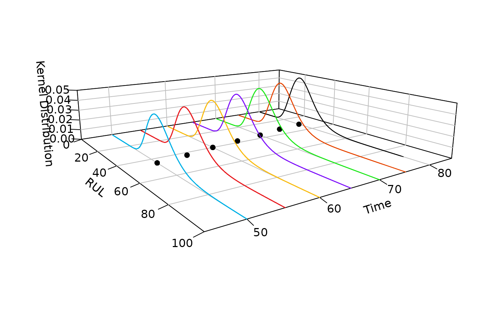

This function is used to calculate Remaining Useful Life (RUL).
Arguments
- fut_time
time.
- group
group
- time_epoch
time_epoch
- threshold
threshold of a degradation path.
- data
degradation data.
- para
parameters of a certain model.
- process
Wiener, Gamma or Inverse Gaussian process.
- type
classical in default.
- zlim
zlim.
- xlim
xlim.
- real_RUL
real_RUL.
Examples
dat <- sim_dat(group = 5, t = 1:200, para = c(2,3),
process = "Wiener",type = "classical")
# MLE
mle_fit = sta_infer(method = "MLE", process = "Wiener",
type = "classical", data = dat)
# RUL
RUL_plot(fut_time = c(50,55,60,65,70,75,80),time_epoch = 1:100,
threshold = 150,zlim = c(0,0.05),xlim = c(0,100),data = dat[[1]],
para = mle_fit[,2], group = 1, real_RUL=c(NA,NA,NA,NA,NA,NA)+40)

#> $rect
#> $rect$w
#> [1] 0.2903576
#>
#> $rect$h
#> [1] 0.1208976
#>
#> $rect$left
#> [1] -0.1206195
#>
#> $rect$top
#> [1] 0.3081387
#>
#>
#> $text
#> $text$x
#> [1] -0.0458141 -0.0458141 -0.0458141
#>
#> $text$y
#> [1] 0.2779143 0.2476898 0.2174654
#>
#>